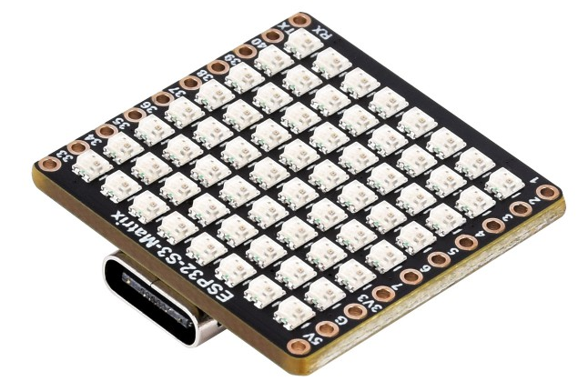

QMI8658 motion stream
Raw six-axis motion from the ESP32-S3-Matrix · rolling 5-second view
Define gesture normalization
Each BOOT-delimited gesture may last a different amount of time. The gesture length is fixed when capture starts; classes can still be added later.
Add or remove classes even after recording or training. Removing a class also deletes its recorded samples (with confirmation); other classes and samples are kept. Class changes require retraining.
Record one gesture at a time
Select a class, arm training mode, then use the physical BOOT button on the ESP32-S3-Matrix as the gesture boundary.
Build the NoodleAI MLP
Training runs locally in TensorFlow.js. The same raw gestures can be transformed into different NAI4 motion representations.
Preprocessing: 5 Hz low-pass filter on the raw 50-Hz IMU samples, before temporal resampling. Accelerometer, gyroscope, and combined inputs use per-gesture mean centering. Direction + magnitude preserves total acceleration and unit direction.
Train a model to evaluate INT8 quantization.
Training curves & classification metrics
Train a model to see loss, accuracy, and validation metrics.
FP32 · final-epoch validation performance
Stratified holdout from captured gestures. Scores are calculated from predictions, not approximated from the training graph.
FP32 validation metrics by gesture class
| Class | Samples | Precision | Recall | F1 |
|---|
FP32 validation confusion matrix
Rows: actual gesture · columns: predicted gesture
INT8 · post-training quantized validation
Quantized predictions from the packed-INT8 Noodle-compatible JavaScript evaluator, using the same held-out gestures as FP32. INT8 calibration uses training inputs only.
INT8 validation metrics by gesture class
| Class | Samples | Precision | Recall | F1 |
|---|
INT8 validation confusion matrix
Rows: actual gesture · columns: predicted gesture
INT8 scores above are browser-side quantized predictions. They are not an independent on-device accuracy test.
For publication: this is a single held-out validation partition, not an external test set. Repeated trials on this split are not independent evidence of generalization; use a separate test set or subject-wise evaluation for final claims.
Send the NAI4 model to ESP32-S3-Matrix
Upload the trained model over Web Bluetooth. No firmware recompile is needed when only the model changes.
The INT8 deployment uses packed wNN.bin and pNN.bin files and requires the ESP32-S3 INT8 firmware. Select FP32 only with an FP32 firmware. The BLE connection checks firmware precision before deployment.
First-time device setup? before connecting over BLE.
Choose device mode
Training streams IMU data and captures BOOT-delimited examples. Inference runs the deployed Noodle model after each BOOT release.
Status / diagnostics
Install NoodleAI INT8 firmware
Flash your Waveshare ESP32-S3-Matrix over USB. No PlatformIO or compiler required on the user's computer.
Use a data-capable USB cable and connect the ESP32-S3-Matrix to your computer.
Use a browser with Web Serial support (such as Chrome or Edge). Close other serial monitors first.
Open the installer below, follow its prompts, and wait until flashing finishes. Reconnect over Bluetooth afterward.
A factory installation can erase flash contents, including FFat-stored models or datasets. It is intended for the Waveshare ESP32-S3-Matrix, not other ESP32-S3 boards. Use compatible firmware and partitions.
ESP32-S3 Matrix — packed INT8
Checking firmware availability…
Important: The bundled factory firmware predates continuous Madgwick streaming. For Accel + Roll + Pitch and updated velocity preprocessing, build and flash the accompanying firmware source; publishing a new factory binary is a separate step.
This installs the ESP32-S3 INT8 runtime. Neural-network models are trained in the browser and deployed separately over BLE in Deploy & Infer.
Having trouble connecting?
Use a USB data cable, disconnect any serial terminal, and reconnect the board. Some ESP32-S3 boards require entering download mode manually using BOOT and RESET. Reload this page after publishing a newer firmware binary.
For maintainers: read firmware publishing instructions. For application-only updates that preserve FFat, use the documented esptool command instead.
Meet the ESP32-S3 Matrix
The Waveshare ESP32-S3-Matrix is a compact microcontroller board with a built-in 6-axis motion sensor, an 8×8 RGB LED matrix, USB-C and wireless connectivity. NoodleAI uses it to recognize gestures without an external IMU or a computer running the neural network.
The demo opens the project's demo.mp4 on GitHub in a new tab.

Hold BOOT, move, release
In Mode 1, pressing BOOT marks the beginning of a gesture. The onboard QMI8658 supplies six motion channels at a nominal 50 Hz. Releasing BOOT ends the gesture and triggers inference.
Gestures can last different lengths. Each gesture is resampled to a fixed number of points (100 by default) so the MLP always receives the same number of inputs.
Documentation and availability
The official Waveshare guide includes board pinouts, hardware resources and getting-started instructions. In Indonesia, you can also look for this board at CNC Store Bandung on Tokopedia.
Store availability, price and listing details can change. The store is an independent seller.
How each input representation is prepared
These are the six choices available in Capture & Train → Input representation for the NoodleAI Mode 1 firmware.
| Input kind | Channels | After the 5 Hz LPF | MLP inputs at N = 100 |
|---|---|---|---|
| Accelerometer ax, ay, az | 3 | Resample, then subtract each axis's mean over that gesture. Apply the training-derived StandardScaler. | 300 |
| Accel direction + magnitude ux, uy, uz, |a| | 4 | Resample filtered XYZ, then split into unit direction and total magnitude. No per-gesture centering. Apply the training-derived StandardScaler only to magnitude; leave the three unit-direction components unchanged. | 400 |
| Gyroscope gx, gy, gz | 3 | Use gyro readings corrected for startup bias (when calibration succeeds). Resample, center each axis independently, then apply StandardScaler. | 300 |
| Accel + Gyro ax, ay, az, gx, gy, gz | 6 | Filter all six channels, resample, center each of the six axes separately, then apply StandardScaler. | 600 |
| Estimated Velocity vx, vy, vz | 3 | Low-pass filter accelerometer per gesture; use continuous Madgwick orientation, remove world-frame gravity, integrate acceleration and apply endpoint correction, then resample and standardize. | 300 |
| Accel XYZ + Roll + Pitch ax, ay, az, φ, θ | 5 | Resample LPF5 acceleration with gravity-referenced roll and pitch derived from the quaternion continuously estimated by the device. No per-gesture orientation reset or mean centering. | 500 |
All channels use time-major ordering (all channels for time step 0, then all channels for time step 1, etc.). StandardScaler statistics are learned from training samples only and reused on the board. This table documents Mode 1; the continuous Mode 2 firmware has a different acquisition and conditioning contract.
Does mean centering remove gravity?
For a gesture held at roughly constant orientation, subtracting each accelerometer axis's gesture mean removes most of the stationary gravity offset. It does not compensate for gravity changes when the board rotates. This Mode 1 pipeline uses only the 5 Hz LPF before per-gesture centering.
What exactly is Accel direction + magnitude?
From the same low-pass-filtered and resampled acceleration vector a = (ax,ay,az), calculate m = sqrt(ax²+ay²+az²) and use (ax/m, ay/m, az/m, m). If m ≤ 0.001 g, set direction to (0,0,0) to avoid division by zero. At rest, magnitude is normally near 1 g; it is total measured acceleration, not a separate gravity sensor.
Why do we still use StandardScaler?
Filtering and centering prepare the physical signal; StandardScaler adjusts each feature using means and standard deviations estimated across the training examples. For direction + magnitude, the three unit-direction components are left unscaled, and only magnitude is standardized.
Where does the neural network run?
Training and evaluation run in your browser using TensorFlow.js. The browser sends an NAI4 model to the ESP32-S3 over Bluetooth LE. After BOOT release, the board constructs the same feature representation and performs Noodle inference locally.
From a USB cable to your own gesture classifier
Use Flash Firmware once, connect over BLE, collect examples, train a model, and deploy it. Watch the demonstration first if you'd like to see the full workflow.